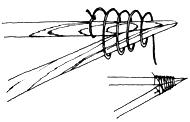
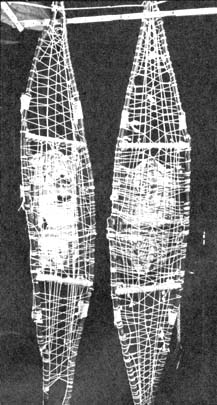

No Budget Snowshoes
November/December 1972
by TOM RUSSELL
Up here in Wisconsin, other far northern states and Canada, it's not unusual for four feet of snow to cover the ground in February.
At that time of the year, snowshoes are the only workable means of cross-country transportation and it's really a trip to strap on a pair, walk four miles through the woods, observe lots of wildlife . . . and never see another person or a road.
The only trouble (for me, at least) is that snowshoes cost about $40 and, last January, I didn't have $10-let alone $40-for such gear. I decided to make my own from natural materials and labored through several tries to construct a fancy bent-wood pair. All such attempts failed, however, since our area has no ash trees (and ash is the only wood that really takes and holds the proper curves when steamed and bent into snowshoe frames).
Eventually I gave up trying to build for pretty and decided I'd just build for stout by making my snowshoes from whatever creek saplings and string I had on hand, The finished gear you see in the pictures with this article cost me only one day's labor. It won't win any beauty contests, that's for sure, but it does keep me on top of the snow.
The frames of my down-home footwear are long, fairly straight sticks that are not too crooked, about as thick as your thumb at the small, not much bigger on the other end and four to five feet long (choose the longer lengths for taller people). Try to take your framing members from spots in which the saplings are obvious ly growing too thickly and cut sticks that are springy enough to bend somewhat without breaking.
Cut the three longest saplings to the length of the shortest, trim all four (Fig. A) so they'll fit together (Fig. B) and bind the sticks (Fig. C).
Next cut four 1" x 2" spreader bars eight to ten inches long and insert them between the long saplings as shown in Fig. D. Then string up the frames so they hold together and look as pretty as you can make 'em (Photo 1). As an experiment, I strung one of mine with nylon seine twine and the other with heavy cotton string. So far both have held up well, even on trips over crusty snow.
Make a rope bridle large enough to accommodate a boot toe across each snowshoe. The binding should be placed ahead of the shoe's center of balance so that the toe of the contrivance is picked up as you raise and move your foot forward. Fasten the snowshoe to your foot with a loop of rope long enough to go around your ankle and hook (with a bent nail or whatever) back into the bridle as shown in Photo 2. It's a good idea to add some nylon, rope, rawhide or fabric reinforcement to each snowshoe where your boot rests.
That's it! You're ready to go. Just don't forget to pack along a geodetic survey map and compass on those long overland treks. The north woods look altogether different when they're waist-deep in snow . . . and a good outdoorsman always figures on finding his way back home again before he even leaves the cabin.
|
FIGURE 1: After cutting saplings to the same length, trim the ends so that the faces come together as flat as possible. |
FIGURE 2: Before binding the snowshoe together, make sure that the natural bows of the sticks point out and down. |
 FIGURE 3: Tie end of string to one of the poles and wind toward end of joint. Keep the cord taut and stop about 2/3 of the way out. Then wind back. Finish off by tying the remaining string to the other stick. |
|
FIGURE 4: Cross supports get tied into the shoe when you do the webbing. |
 Tom made the harness which holds the boot to the snowshoe out of ordinary rope. The extra twigs on either side of the boot were added to strenghten the main frame. |
 Here's the pair of snowshoes made by Tom Russell. Note how the webbing is interwoven to reduce slipping from side to side where the cords cross. It is important to keep string taut while weaving so that the tension is evenly distributed throughout the shoe. |